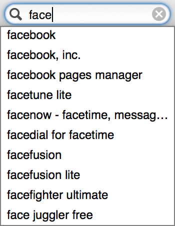

<div class="container">
	<div class="row">
		<div class="col-sm-12 col-md-12 col-lg-12">
			<h1>Search Interface</h1>
      
      
      
      
       
      
      
      <p class="longText">The app search interface uses:</p>
      
      <ol class="longText">
        <li><strong>Just-in-time suggestions</strong>: ‘face’ should display apps (first) and publishers (second) that contain the word ‘face’ in their names.
        
        <span class="warning">Consider designing a visual interface (not just word-based) for this</span></li>
        <li><strong>Corrected keywords</strong>: searching for ‘faebook’, ‘facbook’, facebok’ and so on should display Facebook.</li>
        <li><strong>Related keywords</strong>: searching for ‘play’ or ‘game’, ‘what to play’ and so on should display the <a href="categories.html">list view of apps within the Games category</a>, rather than search results. Searching for ‘settings’ should display search result page for all apps that contain that keyword, but also ‘click here to go to your Settings page’ link down below.</li>
      </ol>

		</div>
	</div>
	<!-- Pagination. If you have more than one page, set the multipage variable in the Frontmatter to true. Editing the pagination code happens in /_includes/homePagination.html.
		NOTE: This is currently broken in the Jekyll ver of this template.
		-->
		{% if page.multipage %}
			{% include homePagination.html %}
		{% endif %}
